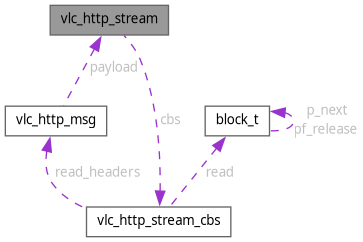

vlc_http_stream Struct Reference
HTTP stream. More...
#include <message.h>
Collaboration diagram for vlc_http_stream:

Data Fields | |
| const struct vlc_http_stream_cbs * | cbs |
Detailed Description
HTTP stream.
Field Documentation
◆ cbs
| const struct vlc_http_stream_cbs* vlc_http_stream::cbs |
The documentation for this struct was generated from the following file:
- modules/access/http/message.h
Generated by